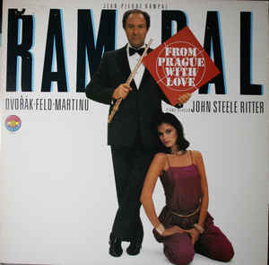

This page discusses the totally AMAZING accomplishments of four musical figures:
Composer Hector Berlioz was a French composer, music critic, and scholar who lived from 1803 to 1869. Active during what is known as the "Romantic period," Berlioz contributed to the genre known as "program music" with the sympohonic work Symphonie fantastique . A programmatic work is one that utilizes a written program to help expand up on the meaning of (mostly) independent music. Symphonie fantastique, for instance, describes an artist's unrequited love. He has taken opium, and has a result imagines an number of emotionally-influenced scenarios. A program that the audience reads helps to shape their perception of the musical events such that the sounds help to tell an extra-musical story.
Want to learn more? Check out this article by NPR!
Born in Frankfurt, Germany in 1903, Theodore W. Adorno lived through two world wars and massive changes in western society that took place before he died in 1969. As a member of the Frankfurt School (a school of philospy and social theory), Adorno was the only member to contribute substatively to the field of musicology(scholarly study of music). He critiqued the impact of the medium of radio on the public and on the arts (published 1945), the state of modern art music (in 1956), and the social, political, and aesthetic ramifications of mass-mediated vernacular music(popular music). He also trained as a composer, studying for a time with Viennese composer and scholar Alban Berg.
Want to learn more? Check out this New Yorker article!
Living from 1867 to 1944, Amy Cheney Beach was the first successful American female composer of large-scale art music. In particular, her "Gaelic" Symphony was the first symphony composed and published by an American woman. Beach has also been celebrated for her work as a pianist, in particular because she featured her own music at a time when a successful career in music was extremely rare for a woman.
Want to lear more? Check out this New York Times article!
Jean-Pierre Rampal was a french flutist. Born in 1922, taught, recorded, and performed in Europe and the United States until 1999. He died one year later. Rampal is credited with a resurgence of popularity of the flute as a solo instrument, and for creating a blueprint for future soloists to model their careers after. He also did this:

What to learn more? Check out this website!